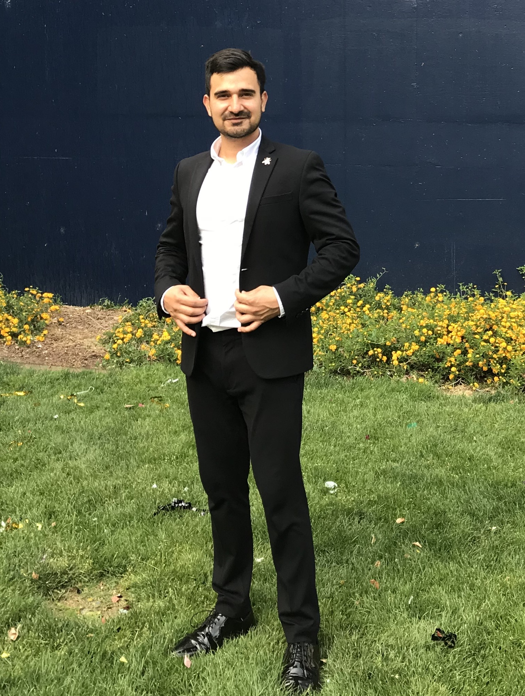

About Me
I am a Physics PhD candidate at UC Merced, working with Prof. Lin Tian on strongly coupled light–matter systems. I develop analytical models and numerical simulations to understand how interactions shape quantum states, and what those states could offer for storing and controlling quantum information.
My doctoral research asks whether two coupled cavity–qubit systems can support a bosonic qubit through their static Hamiltonian, without continuous driving or engineered dissipation. I study the spectrum, symmetries, and dynamics of this quantum Rabi dimer, and use electromagnetic simulations to assess a proposed superconducting-circuit implementation.
At Lawrence Livermore National Laboratory, I developed Python tools for superconducting-qudit control and quantum process tomography. Alongside my research, I build scientific software for quantum error correction and tools for physics teaching.
I am seeking research opportunities in quantum computing and computational physics across industry, national laboratories, and academia.
Current Research
Quantum Rabi dimer: from coupled cavities to bosonic qubits
Coupling two cavities changes their collective photon modes. In my doctoral work, I examine how the softening of one mode enables cat-like states in the low-energy spectrum, and characterize the parameter regime in which an isolated even–odd doublet forms a candidate bosonic-qubit codespace.
The central question is how much of this structure can arise from a static Hamiltonian, without an external drive or engineered dissipation to stabilize it.
- Spectrum and state structure. I combine normal-mode analysis with sparse exact diagonalization to identify low-energy doublets, resolve crossings using parity and site-exchange symmetry, and track states as the coupling changes.
- Dynamics and noise. I calculate state evolution, entanglement, and photon distributions, and study how photon loss affects the proposed encoding. This separates coherent evolution within the doublet from decoherence and leakage.
- Circuit feasibility. I use COMSOL electromagnetic simulations and circuit models to extract mode frequencies, capacitances, impedances, and inductive participation. These calculations test which features of the theoretical model a proposed superconducting layout can realize and identify the remaining coupling constraints.
Status: Two manuscripts in preparation, covering the quantum Rabi dimer and its proposed superconducting-circuit realization. The circuit work is a modeling and feasibility study; experimental realization remains a future step.
The numerical work runs on SLURM clusters, with convergence checks and a version-controlled record of model conventions, simulation results, and open questions. An interactive simulation interface supports exploration of the model; unpublished code and results are available to discuss in interviews.
Technical Skills
- Quantum modeling: Light–matter Hamiltonians, normal-mode and Bogoliubov analysis, symmetry-resolved spectra, bosonic encodings, and open quantum systems.
- Numerical methods: Sparse exact diagonalization, eigenstate tracking, time evolution, convergence analysis, model fitting, and SLURM/HPC parameter sweeps.
- Circuit modeling: COMSOL electromagnetic simulation, capacitance and impedance extraction, and inductive participation analysis.
- Control and characterization: Pulse-level superconducting-qudit control, linear-inversion quantum process tomography, and Ramsey and T1/T2 analysis.
- Quantum error correction: Stabilizer simulation, correlated-noise models, Monte Carlo benchmarking, Stim, and PyMatching.
- Software: Python, NumPy, SciPy, QuTiP, Matplotlib, Flask, Git, Linux, pytest, and LaTeX; JavaScript and Google Cloud for web applications.
Professional & Research Experience
Physics Graduate Intern, Quantum Computing LLNL · May–Aug 2024
- Developed Python software for pulse-level control of superconducting qudits and evaluated gate sequences using quantum process tomography.
- Built a modular linear-inversion tomography pipeline to reconstruct process maps from experimental data using pseudo-inverse methods.
- Analyzed Ramsey fringes and T1/T2 measurements to characterize device behavior and inform control experiments.
Graduate Student Researcher UC Merced · May 2023–Present
- Develop analytical and computational models of the quantum Rabi dimer with Prof. Lin Tian, connecting spectral structure and symmetries to state preparation and bosonic-qubit dynamics.
- Build sparse-diagonalization and open-system simulation workflows for cluster computing, and assess a proposed circuit implementation through electromagnetic and circuit modeling.
- Designed and deployed the Physics Concept Analyzer Tool to support students in setting up and reasoning through physics problems.
Teaching Leadership
I help students connect physical intuition to mathematical models through discussion, laboratory work, and guided problem solving.
Teaching Assistant (Multiple Courses) | UC Merced & SJSU (2021 - Present)
- Award Winning: Two-time recipient of the Outstanding Teaching Assistant Award (UC Merced 2026, SJSU 2022) for pedagogical excellence.
- EdTech Integration: Piloted the "Physics Concept Analyzer Tool" (PCAT) to help students identify concepts and develop models for discussion problems.
- Curriculum Development: Collaborated with faculty to design inquiry-based laboratory exercises for biological science students.
Key Projects
nonmarkov_qec: quantum error correction under correlated noise
Open-source Python package for comparing surface-code memory under temporally correlated dephasing and a statistically matched white-noise baseline.
- Built the pipeline from stochastic noise generation and Stim error injection to PyMatching decoding, Monte Carlo sampling, and bootstrap uncertainty estimates.
- For the tested distance-3 and distance-5 codes, the estimated crossing remained consistent within uncertainty across correlation times of 0.2–200 cycles. This result applies to the tested per-qubit-independent data-gate dephasing model with uncorrelated readout.
- The package includes 74 tests, type checking, continuous integration, and automated releases. Planned extensions include correlated syndrome and two-qubit-gate errors.
pip install nonmarkov_qecSparse diagonalization for spin-torque oscillator arrays
Developed a sparse-matrix diagonalization workflow for large two-dimensional spin-torque oscillator arrays, supporting calculations of their spectra and edge modes.
Physics Concept Analyzer Tool (PCAT)
A Flask application deployed on Google App Engine for use in physics teaching at UC Merced. Students work through concept identification, model assumptions, and common pitfalls before starting a calculation.
- Architecture: Built end-to-end on Flask + Google App Engine, with a structured LLM pipeline integrating Google Gemini and multimodal input (text, voice, PDF/figure attachments).
- Tech Stack: Python, Flask, Google Gemini API, Google Cloud (App Engine), JavaScript.
Quantum Rabi Dimer Simulation Interface (Full-Stack Web App)
- Overview: An interactive research tool for exploring photon-exchange dynamics and cavity-interaction regimes in the two-site Quantum Rabi model — the system at the center of my PhD research. Users adjust model parameters and see quantum states recomputed and visualized in real time.
- Tech Stack: Python (NumPy linear-algebra backend), Flask (API), JavaScript (frontend visualization), HTML5/CSS3.
- Note: Kept private to protect unpublished results; available to discuss in interviews.
Quantum Key Distribution (QKD) Protocol Simulator
- Overview: A web-based simulation demonstrating the inherent security of quantum encryption through the BB84 Quantum Key Distribution protocol.
- Tech Stack: Python, Flask, HTML/Jinja2, and Google Cirq for backend quantum circuit simulations.
- Features: Simulates the key exchange between Alice and Bob, and includes a module to introduce an eavesdropper (Eve), visually demonstrating how measurement disturbs quantum states and reveals interception attempts.
Quantum Error Correction: Surface Code Simulation
- Overview: A Python-based simulation of a distance-3 surface code, built to demonstrate foundational principles of quantum error correction.
- Tech Stack: Python, NumPy.
- Features: Initializes a grid of data qubits, introduces random bit-flip errors, measures stabilizers to generate error syndromes, and tracks error candidates via overlapping stabilizers to correct errors and restore the logical state.
Machine Learning: Handwritten Digit Recognition
Implemented a Neural Network using TensorFlow and Keras. Focused on data preprocessing and architecture optimization to achieve high-accuracy digit recognition. View Repository.
Publications & Talks
Peer-reviewed publication
Shivam Kamboj, Rembert A. Duine, Benedetta Flebus, and Hilary M. Hurst, "Oscillatory edge modes in two dimensional spin-torque oscillator arrays", Physical Review B (2024). DOI: 10.1103/PhysRevB.109.094436
Manuscripts in preparation
Shivam Kamboj and Lin Tian, "Deterministic Cat States and Parity-Protected Bosonic Qubits in the Quantum Rabi Dimer", manuscript in preparation.
Conference presentations
Shivam Kamboj and Hilary M. Hurst, "Topology of a Driven 2D Spin Torque Oscillator Array", APS March Meeting 2022, Chicago, Illinois. Abstract ID: T00.249
Hilary M. Hurst, Rembert A. Duine, Benedetta Flebus, and Shivam Kamboj, "Exploring non-Hermitian topology with spin-torque oscillator arrays", APS March Meeting 2022, Chicago, Illinois. Abstract ID: K52.002
Outreach and Awards
- Guest Lecture, Computational Physics (PHYS 281), UC Merced 2026
- Recipient of Outstanding Graduate Teaching Award, UC Merced 2026
- Physics Graduate Group Summer Fellowship ($7,000), UC Merced 2026
- Physics Graduate Group Travel Fellowship ($750), UC Merced 2026
- Physics Graduate Group Summer Fellowship ($7,000), UC Merced 2025
- Advanced Quantum Testbed (AQT) Summit, Lawrence Berkeley National Lab — technical sessions on superconducting qubit scalability and quantum error mitigation 2025
- Guest Lecture, Computational Physics (PHYS 281), UC Merced 2024
- Physics Delegate, Graduate Student Association, UC Merced 2024
- Poster Presentation, PLS Division Student Poster Symposium, Lawrence Livermore National Lab 2024
- Invited Talk, "Simulating Quantum Systems", Friday Seminar Series, CSU Stanislaus 2024
- Member, Graduate Dean Advisory Council on Diversity (GDACD), UC Merced 2023
- Real World Quantum Computing Workshop, Lawrence Livermore National Lab 2023
- Recipient of Outstanding Teaching Assistant Award ($1,000), San Jose State University (certificate) 2022
- Mentor, Learning Assistant - Reflection, Guidance and Exploration (LA-RGE) Program (certificate) 2022
- IBM Quantum Challenge, Online Challenge Exam 2020
- First Position, "Tech-Invent" Competition — Presentation of a Silicon Particle Detector 2017